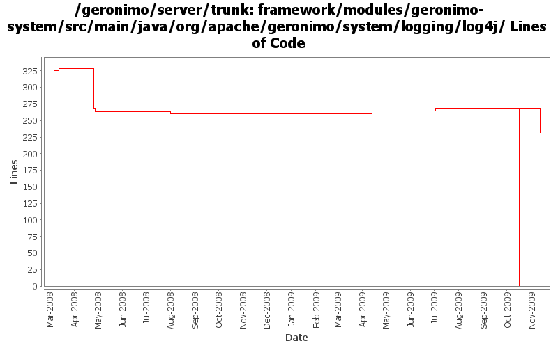

[root]/framework/modules/geronimo-system/src/main/java/org/apache/geronimo/system/logging/log4j

| Author | Changes | Lines of Code | Lines per Change |
|---|---|---|---|
| Totals | 23 (100.0%) | 474 (100.0%) | 20.6 |
| djencks | 10 (43.5%) | 379 (80.0%) | 37.9 |
| jdillon | 6 (26.1%) | 53 (11.2%) | 8.8 |
| gawor | 3 (13.0%) | 20 (4.2%) | 6.6 |
| xuhaihong | 1 (4.3%) | 17 (3.6%) | 17.0 |
| kevan | 1 (4.3%) | 5 (1.1%) | 5.0 |
| dwoods | 2 (8.7%) | 0 (0.0%) | 0.0 |
some more logging updates: 1) use geronimo log4j.properties files to configure logging, 2) expose service to configure logging programtically, 3) remove unused geronimo-logging module
0 lines of code changed in 1 file:
GERONIMO-4916 step 2 move sandbox osgi framework into trunk
269 lines of code changed in 3 files:
GERONIMO-4916 step 1 remove old framwork
0 lines of code changed in 5 files:
GERONIMO-4726 Call LogManager.shutdown() during doStop()
5 lines of code changed in 1 file:
GERONIMO-4615 Make the client application could use their own Log4j configuration with ApplicationLog4jConfigurationGBean
17 lines of code changed in 1 file:
get the name of the classLoader attribute right (GERONIMO-4286)
2 lines of code changed in 1 file:
read log file line by line instead of loading the entire file into memory (GERONIMO-4224)
18 lines of code changed in 1 file:
More loggers back to statics
2 lines of code changed in 2 files:
Drop XLevel, as of Log4j 1.2.12 there is a Level.TRACE
Re-enabled support for org.apache.geronimo.log.ConsoleLogLevel
35 lines of code changed in 1 file:
(GERONIMO-3985) Use SLF4J as the primary logging facade for Geronimo
16 lines of code changed in 3 files:
GERONIMO-3900 Add runtime support for non-Sun JVMs. Merged in updates from 2.1.1 branch.
0 lines of code changed in 2 files:
GERONIMO-3898 Make the ApplicationLog4jConfigurationGBean actually work
13 lines of code changed in 1 file:
GERONIMO-3898 gbean for app-specific log4j configuration
97 lines of code changed in 1 file: